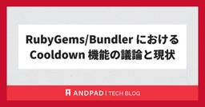

ANDPAD Tech Blog
https://tech.andpad.co.jp/
ANDPAD の開発部からのお知らせやエンジニアリングに関する話題を発信するTech Blog です。
フィード

RubyGems/Bundler における Cooldown 機能の議論と現状 28
28
ANDPAD Tech Blog
こんにちは、Ruby コミッタの柴田です。最近は暖かくなり、ガーデニングで栽培しているバラや藤の新芽や花芽が出てくる時期になってきたので、しっかり花を咲かせるように薬剤や肥料の準備をしなければ〜と必要なものの買い物計画を立てている真っ最中です。 今回はサプライチェーンセキュリティの対策として他のエコシステムで導入が進んでいる「Cooldown（クールダウン）」機能を紹介し、私がメンテナンスしている RubyGems と Bundler でも導入するべきか検討した背景と、今後の方向性についてお話しします。 Cooldown とは何か Cooldown とは、パッケージの新しいバージョンがリリース…
3日前

アンドパッドは Go Conference mini in Sendai 2026 を満喫してきました ! (gopher 会クイズの解説付き)
ANDPAD Tech Blog
こんにちは、 id:sezemi です。 Go Conference mini in Sendai 2026 で Gyutan スポンサーを務めながら、肝心の牛タンをいつ食べられるのか、腐心していたのですが、一緒にいった小島さんから「たんや善治郎 さんは普通に行列が出来てしまうけど、お弁当なら作りたてで美味しい」という hack を教えてもらったので、それに倣ってみると、とても美味しく堪能できました。 仙台出張の思い出です。 さて、アンドパッドはその Go Conference mini in Sendai 2026 に協賛・ブース出展し、登壇者 2 名を含む、合計 4 名の Gopher が…
11日前
アンドパッド 技術イベントのご案内 2026 年 3 月
ANDPAD Tech Blog
こんにちは、 id:sezemi です。 小 3 の娘がガチャガチャ (いまはカプセルトイというのが主流 ...) にハマっており、その中でも "こめちゅあ" を集めています。 ただハマったのが最近で、いま出ている vol.2 より、 vol.1 に夢中になっていて、収集が難しくなっております。 もし「こめちゅあ vol.1 がココにあるよ！」という情報があれば、こそっと X でメンションいただけると、とても喜びます。 さて、アンドパッドでは、技術やプロダクト開発、組織に関するさまざまなカンファレンス・イベントでの登壇、開催や会場提供などを行っています。毎月、イベント情報をまとめてお知らせして…
12日前
アンドパッドのQualityControlを紹介します！2026
ANDPAD Tech Blog
1. はじめに アンドパッドのTECH BLOGをご覧いただきありがとうございます！ アンドパッドのQCマネージャーをしている安室（やすむろ）です。 以前にも、アンドパッドのQCを紹介する記事を2本ほど執筆させていただいています。 ANDPADのQualityControlを紹介します！2023 - ANDPAD Tech Blog QCは開発の中で何をする？～作るプロセスの中にいる、作らない人～ - ANDPAD Tech Blog そこから時間が経ち、組織のステージも一歩進んできているので、今回はアップデートとして改めてアンドパッドのQCについて紹介させていただこうと思います。 「アンドパ…
24日前
なぜGoは「デフォルトが一番安全」を目指すのか？ - Secure by DesignとGo の動向
ANDPAD Tech Blog
はじめに どうも、ANDPADテックリードの tomtwinkle です。 今回は Go 1.26 リリースパーティで話す予定…でしたが、どうも尺に収まらないので泣く泣くカットした分 を事前に記事として公開しておく内容です。 と言いつつ、この記事も書いてたら分量多くなりすぎて Go 1.26 ネタが入りきらなかったので Go 1.26 ネタを聞きたい人はリリースパーティーで会いましょう。 発表後、Go 1.26ネタを含んだ第二弾を公開予定です。たぶん。 https://gocon.connpass.com/event/381405/gocon.connpass.com みなさんは 「Secur…
1ヶ月前
アンドパッドは Go Conference mini in Sendai 2026 に協賛・ブース出展し、 gopher 会クイズをやります !
ANDPAD Tech Blog
採用広報の id:sezemi です。 ハサウェイの 1 作目は何周もしたので 2 作目を観たい、自由がないパパです。 現場からは以上です。 さて、今週末 2/21 に Go Conference mini in Sendai 2026 が開催され、アンドパッドは Gyutan スポンサーとして協賛・ブース出展します。 この記事では Go Conference mini in Sendai 2026 をアンドパッドが全力で盛り上げようとしている模様をお知らせします。 アンドパッドの Gopher 2 人のトークで盛り上げます ! Room A 13:40 ~ database/sql/driv…
1ヶ月前
Nuxt の自動インポート機能、無効化しました
ANDPAD Tech Blog
ANDPAD 引合粗利管理のフロントエンドを担当している小泉です。 昨年 7 月に Nuxt 4 が正式リリースされ、私たちのチームでもアップデートに向けた準備を本格的に進めています。 その過程で、Nuxt の大きな特徴の１つである、関数やコンポーネントの「自動インポート」を完全に無効化し、全ファイルに明示的なインポート文を追加するという意思決定を行いました。 こう書くと、一見、Nuxt ならではの利便性を手放し、Vue / Nuxt をあえて採用するメリットを損なうような選択に見えるかもしれません。しかし、実際はそうではなく、むしろ今後も長く Nuxt を使い続けていくための、ポジティブな意…
1ヶ月前
Dependabot から Renovate へ移行した理由 〜Node.jsとライブラリバージョン管理の自動化〜
ANDPAD Tech Blog
ANDPAD ボードと歩掛管理を開発しております soe-j です。 昨年、大量の npm パッケージに不正なコードが混入したり、Node.js のセキュリティアップデートが話題になったり、緊張感が高まってきています。 大量の人気パッケージにサプライチェーン攻撃が発生した件についての記事 https://www.aikido.dev/blog/npm-debug-and-chalk-packages-compromised Node.js セキュリティアップデート情報 https://nodejs.org/ja/blog/vulnerability/ これらの状況から、ちょっとセキュリティ意識…
1ヶ月前
アンドパッドSRE/CRE/FinOpsメンバーによるSRE Kaigi 2026のおすすめセッション
ANDPAD Tech Blog
こんにちは。FinOpsチームのテックリードの吉澤です。 アンドパッドのSRE/CRE/FinOpsチームのメンバーで、2026/1/31(土)に中野で開催されたSRE Kaigi 2026に参加してきました！ 今回は、現地参加したメンバーによるおすすめセッションをご紹介します。これからSRE Kaigi 2026の内容を追う方は、ぜひ参考にしてみてください。 ちなみにイベントレポート第1弾として、私の一般セッションでの発表（予期せぬコストの急増を障害のように扱う）とその反響を以下の記事にまとめています。こちらもあわせてご覧ください。 tech.andpad.co.jp 現地参加したメンバーに…
1ヶ月前
ANDPAD STADIUM で builderscon::3DP #1 を開催しました
ANDPAD Tech Blog
こんにちは、柴田です。Tokyo Node で開催中の攻殻機動隊展に行ってからと言うもの、タチコマが好きすぎて、妻とタチコマのモノマネをして遊びながら毎日を過ごしています。 さて、今回は1月30日にアンドパッドのイベントスペース、 ANDPAD STADIUM で開催された builderscon::3DP #1 について、開催の概要と当日の雰囲気をまとめます。 開催概要 builderscon は「知らなかった、を聞く」をテーマにしたカンファレンスですが、そのスピンオフとして3Dプリンティングに特化した builderscon::3DP #1 が開催され、今回アンドパッドは会場を提供しました…
1ヶ月前
SRE Kaigi 2026で「コスト版ポストモーテム」の導入とその後の改善について発表しました
ANDPAD Tech Blog
FinOpsチームのテックリードの吉澤です。去年まではSREチーム所属だったのですが、1月からは新設されたFinOpsチーム（旧：インフラコストマネジメントプロジェクト）の専任になりました。 このチームの活動に関連した内容を、2026/1/31(土)に中野で開催されたSRE Kaigi 2026にて発表してきました。 今回の記事では、この発表スライドの内容や、時間の都合で省いた詳細の補足、そしてAsk the SpeakerやXで頂いた質問への回答をご紹介します。 発表スライド：予期せぬコストの急増を障害のように扱う――「コスト版ポストモーテム」の導入とその後の改善 「ポストモーテム」はすでに…
1ヶ月前
アンドパッド 技術イベントのご案内 2026 年 2 月
ANDPAD Tech Blog
こんにちは、 id:sezemi です。 先月、るびま の中の人となり、初めて携わった記事が公開されました (fix typo してマージしただけですが ...) 。 ぜひご覧くださいませ ~ 。 magazine.rubyist.net さて、アンドパッドでは、技術やプロダクト開発、組織に関するさまざまなカンファレンス・イベントでの登壇、開催や会場提供などを行っています。 毎月、イベント情報をまとめてお知らせすると 2025 年 8 月にご案内しましたが、諸々あって今月から再開します。 ぜひご参加ください !! なお、開催状況により、満員となってしまっている場合、すでに受付を終了している場合…
2ヶ月前
Tamachi.sre#2で「小規模SREチームで支える、Atlantisで実現するインフラ管理のセルフサービス化」というタイトルで発表しました！
ANDPAD Tech Blog
こんにちは。サービスプラットフォーム部 部長の角井です。 2026/01/16(金)に開催されたTamachi.sre#2でアンドパッドは会場スポンサーとして協賛し、ミニブース出展とスポンサーセッションで参加させていただきました！ 私のセッションでは、「小規模SREチームで支える、Atlantisで実現するインフラ管理のセルフサービス化」というタイトルで発表させていただきました。当日の運営とミニブース出展には、採用広報の広瀬さんとSREチームの千明さんも応援に駆けつけてくれました。 今回はこの登壇の内容と、現地の様子や反響をご紹介します。これからTamachi.sreに参加する方や、今回来られ…
2ヶ月前
建設業のDXをデータで支える ANDPAD Analytics開発の裏側
ANDPAD Tech Blog
こんにちは。プロダクト本部プロダクトアナリティクス部の米山です。 アンドパッドに入社してから、気づけば3年半が経ちました。 この間に、組織やプロダクトは大きく変化し、私自身の役割やプロダクトへの関わり方も少しずつ広がってきました。 本記事では、そうした変化の中で私が携わってきた「ANDPAD Analytics」の開発の裏側について、自身の経歴を振り返りながらお伝えしたいと思います。 入社を検討されている皆さまにとって、何かの参考になれば幸いです。 —---------------------------------- これまでのキャリア ANDPAD Analyticsについて ダッシュボー…
2ヶ月前
【入社式レポート】ベトナム新卒エンジニア3名が入社しました！
ANDPAD Tech Blog
こんにちは！新卒エンジニア採用担当の川上です。 現在、アンドパッドで国籍を問わず多様なバックグラウンドを持つメンバーの採用を強化しています。 今回は、先日執り行われたベトナム新卒エンジニア一期生の入社式の様子をお届けします！ 厳しい選考を経てジョインしてくれたのは、ベトナムのトップ大学でコンピューターサイエンスを専攻し、高い技術力と志を持った精鋭たちです。 彼らが日本の地でキャリアの第一歩を踏み出す場所にアンドパッドを選んでくれたことを、社員一同心から嬉しく思っています。 熱気に包まれた入社式の様子 入社式には、代表 稲田、CFO 荻野、グローバル開発部部長 兼 ANDPAD Vietnam …
2ヶ月前
アンドパッドセキュリティチーム 初のチーム合宿を開催！
ANDPAD Tech Blog
こんにちは！ アンドパッド セキュリティチームの 宜野座(ぎのざ)です。 今回は昨年末に実施したセキュリティチームの初チーム合宿について、なぜチーム合宿を行なったのか、合宿を受けての成果などについて共有したいと思います！ 今年もセキュリティチームでは情報発信を増やしていく予定ですので、楽しみにしていただけると嬉しいです🙌 チーム合宿の開催に至った背景 当日のスケジュール 今回の成果 チームのミッション・バリューのアップデート 中期計画の策定と2026年ロードマップの確定 2026年に取り組む施策 まとめ We are actively hiring! チーム合宿の開催に至った背景 これまでも半…
2ヶ月前
【登壇レポート】DNX Ventures様連携・東京科学大学にて代表 稲田・CCO金近が登壇しました
ANDPAD Tech Blog
こんにちは！新卒エンジニア採用担当の川上です。 現在アンドパッドでは新卒エンジニアの採用活動を活発におこなっております！ その採用活動の一環として、昨年11月に東京科学大学にてDNX Ventures様が提供する講義「 学士価値創造グループワーク基礎B 」と連携し、当社代表取締役の稲田とCCO (Chief Culture Officer) の金近が特別セッションに登壇しました。 本レポートでは、イベントの模様をお届けします！ 代表取締役 稲田からの講演 起業を志す学生が多く参加していたこともあり、起業のリアリティ、チームビルディング、そしてこれからのAIへの取り組みについて、熱量の高い講義を…
2ヶ月前
乗り換えるなら今！ Prettier から Oxfmt への移行を試してみた
ANDPAD Tech Blog
ANDPAD フロントエンドエンジニアの小泉（ @ykoizumi0903 ）です。あけましておめでとうございます。 この年末年始に、 Vue / Vite の関連ツールの現状をまとめる記事（【2026年最新】Nuxt 4 アプリに入れておきたいオススメ設定集）を書いていたのですが、その中で1つの発見がありました。 それは、Oxfmt のステータスがかなり実用的なところまで進んでいるらしいということです。 Oxfmt は、Rust製の超高速な JavaScript ツールチェーン Oxc の一部として開発されているフォーマッターであり、Vue.js や Vite の生みの親である Evan Y…
2ヶ月前
Ruby公式サイトのリニューアルのディレクションの裏側
ANDPAD Tech Blog
こんにちは、hsbt です。昨年末に宣言していた通りゼンレスゾーンゼロと鳴潮をプレイしながら年末年始を過ごして、今度は原神のアップデートを待ちながら暮らしています。 さて、2025年12月21日、Rubyはリリース30周年という大きな節目を迎えました。この記念すべき日に合わせて、Ruby公式サイトを全面リニューアルしました。 www.ruby-lang.org www.ruby-lang.org 2006年の Radiant CMS採用、2013年に Ruby 誕生 20周年のデザインリニューアルと Jekyll による静的サイト化を経て、約12年ぶりとなった今回の刷新。プロジェクトが完遂した…
2ヶ月前
プロと読み解く RubyGems/Bundler 4.0 リリースノート
ANDPAD Tech Blog
こんにちは hsbt です。やっとアサシンクリード・シャドウズのプラチナトロフィーを取りました。年末年始は鳴潮とゼンレスゾーンゼロのアップデートをプレイしながら過ごそうと思います。 さて、Ruby 4.0.0 がリリースされ、毎年恒例の プロと読み解くRuby 4.0 NEWS - STORES Product Blog が公開されましたが、RubyGems や Bundler の解説が何もないことに気がついたのでリリースノートの解説を自分で書こうと思います。 4.0.0 Released - RubyGems Blog 4.0.1 Released - RubyGems Blog 4.0.2…
3ヶ月前
ARR300億へ向けて。建築産業を支えるインフラを目指す、ANDPADの現在地
ANDPAD Tech Blog
1. 100億ARRを通過点に、次なる300億へのロードマップ この秋、ANDPADはARR 100億円を突破しました。この数字は、何よりもまず、日々の多忙な現場でANDPADを使い、貴重なフィードバックを届けてくださるユーザーの皆様の歩みそのものです。皆様に寄り添い、コツコツプロダクトを磨き続けてきたメンバー全員の努力が、1つの節目を迎えました。。 特筆すべきは、2025年に入りSaaS事業の成長率が上昇したことです。その強力なエンジンとなったのは、以下の3つの戦略的進展です。 Deepな業界それぞれに合わせたプロダクトの進化：各領域の複雑な商習慣に深く入り込み、愛されるバーティカルな機能進…
3ヶ月前
Aurora MySQLにおけるPerformance Schemaの手動管理と自動管理の違い
ANDPAD Tech Blog
こんにちは。アンドパッドでDBREを務めてます久保と申します。 こちらは ANDPAD Advent Calendar 2025 の24日目の記事です。 今日はAurora MySQLにおけるPerformance Schemaの手動管理と自動管理の違いについてお話しします。 背景 現在DBREではAurora MySQLのバージョンアップ（3.04.2→3.10.0）の準備をしています。 その準備の中で、開発環境のAurora MySQLのバージョンアップを実施しました。 その際に、バージョンアップを実施した一部のクラスターのFreeableMemoryが急激に落ち始める事象が発生しました。…
3ヶ月前
アンドパッドで働きながら日本語を学ぶ
ANDPAD Tech Blog
はじめに こんにちは、アンドパッドのi18nチームで開発をしているGopiです。 この記事は ANDPAD Advent Calendar 2025 の記事です。 インドのバンガロール出身です。2023年10月にアンドパッドに入社しました。現在、フルタイムで働きながら日本語を学習しています。 今回は、日本企業で働く外国人エンジニアとして、なぜ・どのように日本語を学んできたかという2年間の経験をシェアします。 フルタイムで働きながら言語を学ぶのは簡単ではありません。しかし、N5からN3まで合格し、現在N2に挑戦しています。完璧ではありませんが、挑戦を続けることで確実に成長できました。 同じ状況に…
3ヶ月前
中途入社一年目のテックリードとしての「判断」を振り返る
ANDPAD Tech Blog
こんにちは！2025年1月にアンドパッド入社したやっはー (@yahharo) と申します 🤗 こちらは ANDPAD Advent Calendar 2025 の22日目の記事です。 前職でもテックリードとして機能開発の設計・開発・運用をしてきましたが、アンドパッドでも期中からはテックリードとしてさまざまな経験をしてきました。 しかしながら、新しい環境では、コードベースもチームの文化も異なります。 その中でも手探りしながら、この一年でいくつかの大切な判断をしてきました。 この記事では、今年やってきた判断をいくつか振り返りながら、当時、自分は何を大事にしていたのか、そして 今なら何を見て判断し…
3ヶ月前
アンドパッドのSRE・DBRE・CRE：2025年の活動ハイライト
ANDPAD Tech Blog
ANDPADアドベントカレンダー2025 19日目です！ 開発本部SREチームの 谷合 です。 ｱｻﾋｨｽｩﾊﾟｧﾄﾞｩﾙｧｧｧｧｲが好きなエンジニアとして活動しています。 私からは、今年を振り返る意味でも、アンドパッドのSRE・DBRE・CREのご紹介と活動成果発表をします！ アンドパッドのSREチーム SREチームとDBRE・SREチームの連携 今年の活動 SRE 全社AWS IAMユーザをOktaを利用することでのSSO化 EKSバージョンアップにおけるオペレーション時間短縮（1時間半を10分程度に大幅短縮） インフラコスト最適化 その他の成果 DBRE CRE 参加したカンファレンス …
3ヶ月前
Go Workshop Conference 2025 IN KOBE 参加レポート
ANDPAD Tech Blog
こんにちは。社内向けの通知基盤の開発をしている、通知チーム Tech Lead の小島です。 2025年12月13日に神戸で開催された Go Workshop Conference 2025 IN KOBE に参加し、午前・午後のワークショップ・お昼時間にシャッフルランチとゆるLTに飛び入り参加と、カンファレンスを満喫してきました。 その様子をレポートとしてお届けします。 gwc.gocon.jp 【午前】低レベルコンテナランタイム自作講座 「Docker、containerd、runcの違いを明確に説明できるか？」という問いに自信を持って答えられるようになりたい、というモチベーションで参加し…
3ヶ月前
本当に「被害がなかった」と言い切れますか？npmサプライチェーン攻撃調査の振り返り
ANDPAD Tech Blog
こちらは ANDPAD Advent Calendar 2025 の18日目の記事(＆セキュリティチームブログリレー4日目)です。 こんにちは。アンドパッド セキュリティチームの川村です。2025年1月にアンドパッドに入社し早1年。現在、管理系の部門と開発部門を兼務しながらコーポレートセキュリティ及びプロダクトセキュリティの両方を担当しています。 この記事ではそのような立場からの視点で、2025年8月の Nx 「s1ngularity」に端を発し、立て続けに発生した npm サプライチェーン攻撃の調査や対応について振り返ってみようと思います。 しっかりと取り組みができている企業においては参考に…
3ヶ月前
アンドパッドインターン体験記_村井
ANDPAD Tech Blog
(テックブログ編集部より) アンドパッドでは今年インターンシップを募集し、ありがたいことに複数名にご参加いただきました。 今回も、参加した方にレポートを書いていただきました ! hrmos.co それでは、インターンシップ参加の 村井 さんの生の声をお聞きください! 大学３年生の村井 皇樹（むらい おうき）と申します。 参加のきっかけ インターンを探していた夏頃に以下のような疑問・課題を感じており、インターンを通じて解決したいなと思っていました。 今までの個人開発や長期インターンでの開発経験が、実際の現場でどのくらい通用するのだろうか？ エンジニアとしての天井を上げるために、今まで自分が経験し…
3ヶ月前
セキュリティAIエージェントによる脆弱性診断を試してみました
ANDPAD Tech Blog
こんにちは、アンドパッドセキュリティチームの小野寺です。この記事は ANDPAD Advent Calendar 2025 17 日目の記事です。 現在、セキュリティチームでは脆弱性診断の内製化に取り組んでいます。今回はセキュリティAIエージェントを活用して、Webアプリケーションに対する脆弱性診断を試験的に実施したお話をしたいと思います。 アンドパッドにおける脆弱性診断 アンドパッドはこれまで脆弱性診断の内製化は行っておらず、セキュリティベンダーに依頼して診断を実施していました。 しかし、アンドパッドが成長を続けていく中で、以下の課題が生じています。 マルチプロダクトを展開しており、年々プロ…
3ヶ月前
Google Cloudの監査ログ一元化に向けた取り組み
ANDPAD Tech Blog
こちらは ANDPAD Advent Calendar 2025 の16日目の記事です。 こんにちは、アンドパッド セキュリティチームの和田です。昨日の宜野座に引き続きセキュリティチームからの投稿になります。 ANDPADにおけるGoogle Cloud利用と課題 直面した課題：プロジェクト増加に伴うログ管理の複雑化 フォルダ階層構造と集約シンクの活用 全体アーキテクチャ アーキテクチャ変更による効果 実装の注意点 まとめ おわりに 今回はアンドパッド セキュリティチームが取り組んでいるクラウドセキュリティの中から、Google Cloudに関するログ管理の取り組みについて、「組織構造を活用し…
3ヶ月前